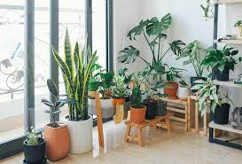

Houseplants are becoming increasingly popular due to their many benefits. This can include boosting your mood, reducing stress and imroving the air quality in your home. The key to maintaining healthy and happy houseplants is understanding their needs and providing consistent care.
There are countless types of houseplants, each with its own specific care instructions. Some common care guidelines include how often to water, the type of light required, and the best soil and propagation meathods to keep the plant healthy. Attached is a helpful webpage about common houseplants.
When you bring home your first few houseplants, it is important to understand their differences. This webpage provides valuable insight into the role of lighting in plant care. Knowing how lighting affects your plants will help you keep them healthy and determine the best spot for them in your home!
| Houseplant | Lighting | Water |
|---|---|---|
| Pothos | Indirect Light | Water weekly |
| Snake Plant | Full or Partial Sun | Water deeply 1-2x a month |
| Monstera | Partial Sun | Water when top 1/3 of soil is dry |
| Fiddle Leaf Fig | Partial Shade | Water when soil is 1/2 dry |